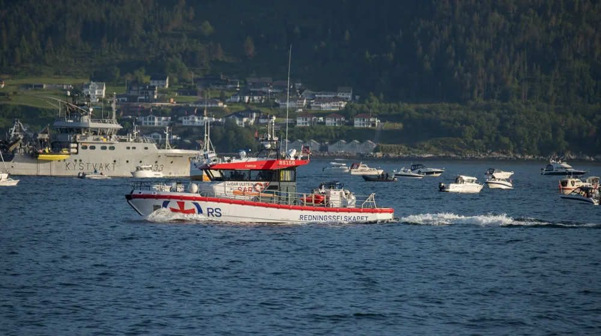

대한민국 해양경찰청, 대체 왜 난리일까? 당신이 몰랐던 '진짜' 임무와 숨겨진 희생!
사진: John Netrebchuk / Pexels (무료 이미지, 출처 표기)
혹시 대한민국 해양경찰청에 대해 얼마나 알고 계신가요?

평범해 보이던 이 이름이 오늘 대한민국 인터넷을 발칵 뒤집어 놓았습니다. 검색어 차트 1위를 꿰차며 '대체 무슨 일이 일어난 걸까?' 하는 궁금증을 폭발시켰죠. 단순히 바다를 지키는 경찰이라고 생각했다면, 큰 오산입니다! 과연 그 이면에는 어떤 심오한 변화와 숨겨진 사연이 숨어 있을까요? 지금부터 그 베일 속에 가려져 있던 대한민국 해양경찰청의 진짜 모습을 파헤쳐 보겠습니다!
급부상 키워드, 그 심상치 않은 배경은?
최근 '대한민국 해양경찰청'이라는 키워드가 뜨겁게 달아오른 데에는 여러 요인이 복합적으로 작용했을 가능성이 큽니다. 단순히 어떤 한 사건 때문이라기보다는, 복잡해지는 해양 환경과 그 속에서 묵묵히 제 역할을 해내고 있는 이들의 노고가 재조명되기 시작한 것이죠. 심화되는 기후변화로 인한 해양 사고의 증가, 불법 조업 문제의 국제적 이슈화, 그리고 마약 밀수 등 해양 범죄의 고도화까지. 우리가 미처 인지하지 못하는 사이, 바다는 더욱 위태롭고 예측 불가능한 공간이 되어가고 있습니다. 이런 상황 속에서 우리의 바다를 지키는 최전선에 서 있는 해양경찰의 중요성과 헌신이 비로소 대중의 시야에 들어오기 시작한 것입니다. 어쩌면 국민들이 이들의 '진짜' 가치를 알아보기 시작한, 매우 긍정적인 신호일지도 모릅니다.
제복 아래 숨겨진 이야기: 해양경찰청의 진짜 임무는?
많은 분들이 해양경찰청의 주된 임무를 '바다에서 익사할 뻔한 사람을 구조하는 것' 정도로만 생각할지 모릅니다. 하지만 그들은 단순한 구조대를 넘어, 육지 경찰만큼이나 다채롭고 위험천만한 임무를 수행하고 있습니다. 예를 들어볼까요?
- 국가 안보의 최전선: 북한 어선의 불법 침범이나 해상 테러 위협에 맞서 국경을 수호합니다.
- 해양 범죄와의 전쟁: 상상을 초월하는 규모의 마약 밀수, 해양 오염 사범, 외국 선박의 불법 조업 등을 추적하고 검거합니다. 영화 '밀수'에서 보던 장면들이 실제로 바다에서 벌어지는 셈이죠.
- 생명 구조 전문가: 폭풍우 속 조난 선박 구조는 물론, 해상 재난 발생 시 최단시간 내 현장 도착을 목표로 합니다. 그들은 단순한 구조자가 아닌, 해양 환경에 최적화된 특수 구조 전문가입니다.
- 해양 환경 파수꾼: 기름 유출 사고나 해양 쓰레기 문제 해결에도 앞장서며, 우리 바다의 생태계를 보호하는 중요한 역할을 합니다.
이처럼 해양경찰은 단순히 배를 타고 순찰하는 것을 넘어, 해양과 관련된 모든 위협으로부터 국민의 생명과 재산을 지키는 '만능 해결사'라고 할 수 있습니다. 그들의 활약이 없었다면, 우리는 지금처럼 안전하게 바다를 즐길 수 없었을 겁니다.
드라마보다 더 드라마틱한 현장, 목숨을 건 사명감!
상상해 보세요. 파고 5m가 넘는 거친 바다 한가운데서 표류하는 선박을 향해 나아가는 해양경찰의 모습을. 한치 앞도 보이지 않는 짙은 안개 속에서 실종자를 찾아 헤매는 그들의 처절한 수색을. 망망대해에서 조난자들은 오직 해양경찰의 무전기 소리만을 기다리며 마지막 희망의 끈을 놓지 않습니다. 실제 해양경찰들의 증언에 따르면, 한 번 출동하면 며칠 밤낮을 새우는 것은 기본이고, 목숨을 담보로 한 위험천만한 작전도 부지기수라고 합니다. 차가운 바닷물 속으로 뛰어들어야 할 때, 무장한 불법 선박과 대치해야 할 때, 이들은 오직 '국민의 안전'이라는 하나의 사명감으로 두려움을 이겨냅니다. '세상에 이런 일이'에 나올 법한 기적 같은 구조 사례 뒤에는 늘 해양경찰들의 땀과 눈물, 그리고 희생이 녹아 있습니다.
달라진 위상과 미래: 대한민국 해양경찰청의 놀라운 변신
2014년 세월호 참사 이후, 해양경찰청은 해체와 재탄생이라는 고통스러운 과정을 겪으며 뼈를 깎는 혁신을 거듭해왔습니다. 과거의 아픔을 딛고, 이제는 첨단 기술을 도입하여 더욱 스마트하고 강력한 해양 안전 지킴이로 변모하고 있습니다. 드론을 이용한 해상 감시, 인공지능(AI) 기반의 사고 예측 시스템, 그리고 빅데이터를 활용한 해양 범죄 분석 등 최신 기술을 적극적으로 활용하며 그 역량을 강화하고 있습니다.
이러한 변화는 해양경찰의 대국민 신뢰도를 높이는 데 크게 기여했습니다. 과거의 실수에서 배우고, 끊임없이 발전하려는 그들의 노력은 '국민을 위한 해양경찰'이라는 새로운 위상을 확립하는 데 결정적인 역할을 하고 있습니다. 앞으로도 대한민국 해양경찰청은 더욱 안전하고 깨끗한 바다를 만들기 위해 끊임없이 진화하며, 우리 국민에게 든든한 버팀목이 되어줄 것입니다.
당신이 몰랐던 해양경찰의 '이것': 숫자로 보는 그들의 활약
말로만 들어서는 실감이 나지 않으시죠? 해양경찰청이 얼마나 바쁘게, 그리고 얼마나 중요한 역할을 수행하는지 몇 가지 통계를 통해 알아보겠습니다.
이 숫자들은 해양경찰청이 얼마나 많은 활동을 펼치고 있는지, 그리고 그 활동 하나하나가 우리 사회에 얼마나 큰 영향을 미치는지 명확하게 보여줍니다. 이들의 헌신 덕분에 우리는 안심하고 바다를 즐길 수 있는 것이죠. 오늘 이 글을 통해 우리가 몰랐던 해양경찰의 진짜 가치와 그들의 희생을 다시 한번 생각해보는 계기가 되었기를 바랍니다.
🔗 이 글도 함께 보면 좋아요: 의료 공백의 숨은 영웅? 공중 보건 의사, 당신이 몰랐던 3가지 진실